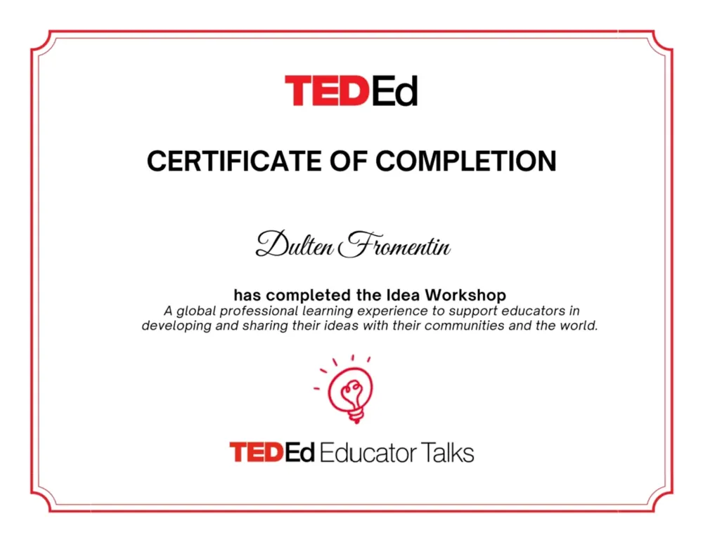
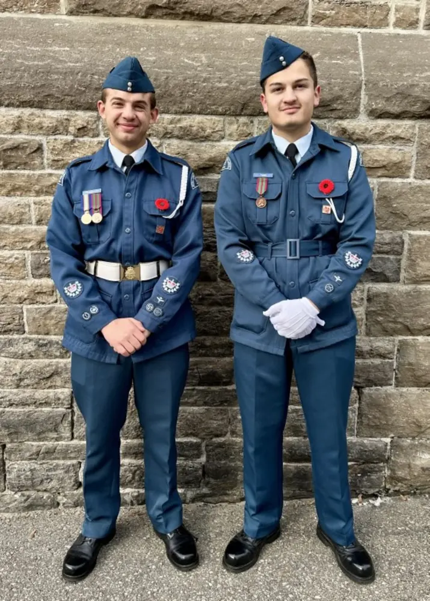

4-H
Participated in the Maple Syrup and Pizza clubs in Prince Edward County, and received first-year member recognition at the 2019 awards night.
CountyLive: 2019 4-H awardsA chronological record of service, advocacy, sport and learning.
4-H participation and recognition
Participated in the Maple Syrup and Pizza clubs in Prince Edward County, and received first-year member recognition at the 2019 awards night.
CountyLive: 2019 4-H awardsJoining the Air Cadets
Joined the Air Cadet Program, beginning a journey through aviation, citizenship, teamwork and practical leadership.
Cadet summer training and rugby
Completed Cadet Activity Program 2 (CAP 2), a summer training experience that builds on local cadet training through practical group activities, teamwork and personal development. It marked an early step in my progression toward instructional and leadership responsibilities.
I began playing rugby in Grade 9 and have continued throughout high school. As a flanker, my role involves supporting teammates at the breakdown, tackling, defending and staying involved in open play. Rugby has become a long-term commitment rather than a single season of participation.
Began paid work in customer service and food operations in 2023, including cashier duties, stocking, and front- and back-of-house work. This experience continued into 2024.
Academic recognition and rugby
Earned Honour Roll recognition for the 2023–24 school year and school rugby in Grade 10.
Continued playing school rugby after starting in Grade 9.

Completed Drill and Ceremonial Instructor training in 2024, as recorded in my October 2026 résumé.
Citizenship, speaking and instructor training
I participated in Rotary Adventure in Citizenship, a national youth program in Ottawa that brings students together to explore Canadian democracy, citizenship and public institutions. My involvement continued after the program: I run the 2025 alumni Instagram page (@aic2025alumni), maintaining a space for participants to stay connected.
Received two Best Advocate awards and one Best Closing Statement award in April 2025.
Completed Fitness and Sports Instructor training, developing the ability to organize physical activities, teach fitness concepts and support safe, inclusive participation in sport.
Spoke at the Canadian War Museum, a national institution dedicated to the study and interpretation of Canada's military history.
Youth advocacy, cadet leadership and sport
Served as acting squadron commander at 661 Squadron and subsequently transferred to 870 Vampire Squadron as a Warrant Officer Second Class. My responsibilities have included mentoring more than 15 cadets on parade nights.
Served as a Flight Sergeant Instructor at Blackdown Cadet Training Centre. I led a platoon for two weeks and subsequently spent four weeks supporting training delivery and other instructional requirements. My work included delivering formal lessons and mentoring course cadets.
Co-founded Bring Back Cadets in response to concerns about reductions in cadet training opportunities. The campaign gathered personal stories and engaged with media and public stakeholders to highlight the program's value. On November 24, VOCM reported my response to the federal government's announcement of additional funding, including my call for clear communication about when activities would resume.
VOCM: cadet funding coverage · New Country NL coverage
As part of Bring Back Cadets, I created a public petition calling for improvements to sexual assault reporting procedures within Canadian cadet programs.
Received the Lord Strathcona Medal at the 2026 annual ceremonial review. The recognition reflects cadet performance, leadership and physical development.
Received the Air Cadet Service Medal in 2026. It recognizes sustained participation and service in the Air Cadet Program.
Received Top Cadet Instructor recognition at the 2026 annual ceremonial review. My instructional responsibilities have included teaching lessons and mentoring cadets.
Received Best Physical Fitness recognition at the 2026 annual ceremonial review. Physical training and sport have been a consistent part of my cadet experience.
Received Poppy Appreciation recognition in 2026 for supporting the Royal Canadian Legion’s Poppy campaign. My community service has also included participation in Remembrance Day ceremonies.
Represented Brockville Rowing Club at the Nancy Storrs Ontario Indoor Rowing Championships on February 28, 2026. My recorded result was 7:53.0.
Official rowing results (PDF)I have played rugby since Grade 9, including as a multi-role flanker.
Completed the Idea Workshop, a professional learning experience focused on developing and sharing ideas with communities and wider audiences.



Participated in a ceremonial flag party at an Ottawa Senators NHL event on January 3, 2026.
Participated in a ceremony marking the 700th anniversary of the Order of St. George. The precise event date is not yet documented here.
Participated in a Canadian Armed Forces engagement at Petawawa on May 8–9, 2026.
My June 2026 cadet leadership application records multiple Commanding Officer commendations. Individual citation dates and wording have not been published.
Completed the requirements of Ontario's Manufacturing Specialist High Skills Major while pursuing the Ontario Secondary School Diploma. My October 2026 résumé records 205 community-involvement hours toward school requirements; this figure is not a claim of 205 independently eligible award-service hours.
Prepared a 60-minute lesson plan and player handout for thirteen U13 hockey players in October 2026. The plan addressed positive leadership, resilience, respect and compassion, and camaraderie. This is a documented instructional design project; delivery has not been confirmed.
Worked in food service from late 2025 into early 2026, then moved into retail sales and donation-centre operations in 2026. Responsibilities included customer and donor service, receiving, sorting, material handling and supporting safe, organized workflows.
Other recorded volunteer experience includes assisting vendors at a farmers’ market and volunteer animal care. Exact dates and eligible service-hour breakdowns are not yet published.